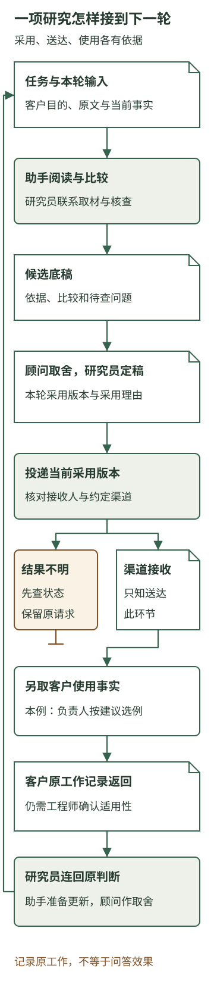

从一个机会到能运行的新生产
本章内容
咨询公司决定尝试围绕客户未决事项开展研究。现在，一位研究员要在客户下次讨论前，交出能够支持选择的分析。顾问不会从头代做，工程伙伴也不会一直守在旁边解释怎样操作。这个安排怎样才算能够运行？
需要接起来的，是一整项工作：眼前要决定什么，哪些材料已经取得，AI做了什么比较，团队采用了哪个判断，内容有没有送到，以及客户接着提供了什么。研究助手的一段回答只是其中一个产物。
下面延续前章的教学情境，构造一次完整的事项研究。客户考虑的多文档问答产品，用于设备服务；咨询公司自己的研究助手，用于准备和更新研究。两者承担不同工作。
一、让这一轮研究有一个明确的起点
设备客户要在下一次内部讨论中，决定从哪类服务问题开始观察多文档问答的帮助。现有材料已经说明：问题是否清楚、设备配置能否确认、手册是否适用，会影响观察范围。客户还提出过加装安排，其中一组设备尚待完成后的确认。
研究员先把本轮任务写清，而不是只输入“研究一下多文档问答”：
当前决定：为服务负责人选择第一轮观察范围，说明为什么适合从这里开始，以及还要取得什么。
使用时点：下次内部讨论前。若关键材料来不及取得，先交当前可支持的判断与取材问题。
已有输入：产品原文、客户访谈、标准配置设备与资料的确认、样例加装设备的完成确认，以及另一组设备的加装计划。
本轮范围：读取已经提供的客户材料与已接通的产品来源，比较适用条件、整理建议；设备事实由客户相应人员提供。扩大观察范围和新增服务承诺，另由顾问与负责人讨论。
这份说明使几项容易混淆的材料有了位置。已经确认的配置可以支持当前范围；加装计划提示将来可能变化；产品演示提供能力线索。它们一起参与研究，但各自能够支持的判断不同。
工程伙伴将这份任务说明、相关材料入口和当前采用的分析放在同一事项下。研究员换人时，可以先看到本轮还在解决什么。客户后来补来一份记录，也能找到它要改变的原判断。
这样的组织不要求先建一套庞大的业务平台。开始时，一份清楚的任务说明、可取得的材料和有版本的底稿也能发挥作用。工作反复发生后，再把容易遗漏的对应做进应用。工程安排的起点，是让人和AI都能取得本次需要的内容。
二、让助手继续做普通工作，把真正的取舍准备出来
助手取得任务后，可以先查已有材料，再提出缺口，继续进行范围内的阅读与对照。它不必每读一份产品说明，就等待顾问批准下一步。
例如，它发现现有摘录只写“支持多文档回答”，便到已接通的原文中查演示条件和引用说明；发现两份资料适用对象不同，就在底稿中并列条件；发现加装计划没有完成依据，就把这组设备保留为待确认。重复来源可以合并，找错的段落可以重查，当前材料不足的地方可以减少结论。
这类工作有共同目标，也有明确范围。助手能自主推进，是因为团队已经说明要形成什么、可以取得什么、哪些新事实需要另行获得。顾问不用逐条安排搜索词，研究员也能把精力放在联系客户与核对材料上。
经过一轮阅读，底稿中可以出现这样的比较：
左右滑动查看完整表格
| 待判断的关系 | 本轮已取得的依据 | 对观察范围的影响 |
|---|---|---|
| 产品能否帮助准备答复 | 原文展示跨文档整理与引文，演示资料版本明确 | 可以调查已有说明的寻找与组织，仍需用客户任务观察 |
| 稳定范围能否选取例子 | 客户已确认一组标准配置设备及其适用资料 | 可以从问题明确、对应关系清楚的咨询中选例 |
| 计划加装组能否按改装后研究 | 目前只有计划，没有该组完成后的对应依据 | 先取得完成事实，保留稳定范围的准备 |
| 客户的等待是否会减少 | 尚缺本轮实际查找、确认和准备答复的过程 | 先安排记录，暂不作减少等待的效果结论 |
研究员可以据最后一行，向服务负责人提出具体取材请求：“请保留一段从收到问题到准备答复的过程，注明在哪一步请教了谁、用了哪些资料。”这比笼统索要“更多业务数据”更容易接入工作，因为它解释了这份材料要解决什么。
助手也可以起草这项请求，但客户记录要通过实际联系取得。产品资料再充分，也不会让尚未发生或尚未提供的客户行动进入底稿。
普通工作的自主推进，与重要取舍的明确承担，可以相互配合。底稿准备好后，顾问要判断的是：是否保留稳定范围、怎样向客户说明待改装部分，以及现在适合承诺哪一轮帮助。若客户要求把全部设备都纳入，或者让咨询公司直接承诺答复效果，这已经改变服务范围，需要重新讨论。
三、工具怎样使分析接上材料和工作
AI并不是因为企业有资料库，就自然用上其中的所有内容。在一次分析中，模型要依据本次实际提供的任务和材料工作。让应用能够查找资料，是把有关内容取得并交给它的一种方式。
这种由应用提供、可以被调用的具体能力，称为工具。读取文件的工具取得文字，检索工具找到相关材料，计算工具处理明确的数量。助手可以根据任务提出调用，程序执行后把结果交回来，分析才有机会使用这些结果。
在这里，助手要比较计划改装与完成确认，就需要读到两份材料的有关内容。如果完成确认只在某个目录里，应用没有取到，它在本轮就仍是缺失输入。知道文件名、看到目录位置，与已经读取内容，是两种状态。
也没有必要每轮都把全公司的历史交给助手。应用可以先提供当前任务与材料目录，再按需要读取有关原文，把较长的比较保存为底稿。下一步只带入相关部分，需要追溯时再取。这让工作能够分步继续，也给研究员留下可以检查的中间产物。
工程伙伴在实现时，要让这些联系保持准确：底稿引用哪一份产品原文，客户确认对应哪些设备，当前讨论使用哪个版本。否则，即使每段文字分别通顺，也可能把旧条件与新计划拼成一个并不存在的事实。
工作台资料中关于任务接手、准确输入、提交版本和采用记录的安排，提供了这种组织的局部参考。它的作用是减少接手者重新猜测当前状态的劳动；单有一个看板或一组文件，还需要实际取得并使用这些内容的人。
四、从候选底稿到团队采用的版本
顾问读到底稿后，选择保留稳定范围的观察，并把计划加装组单列。他同时把交付承诺说得更明确：现有材料支持安排观察，是否减少等待，要在后续比较中回答。
研究员据此形成一份采用稿：
本轮研究建议
从适用资料关系已经确认、问题明确的一类咨询中选取实际例子，分别观察寻找说明、判断适用性和准备答复的过程。先取得现有工作的记录，再比较问答帮助能够作用于哪一段。
稳定范围可以继续准备；计划改装组暂不按改装后的状态进入观察。技术资料负责人提供完成记录与适用依据后，再更新相应范围。
服务负责人协调选例和过程记录。下一轮根据取得的材料，讨论是否值得进入实际工具尝试，以及仍需哪些专业参与。
这份内容成为本次采用版本。团队采用的是观察安排，没有将潜在帮助写成效果承诺。研究员同时保留采用理由：当前输入支持选取观察范围，尚不足以判断劳动变化。下一位同事可以据此解释为什么还要取记录。
固定版本并不是从此永不修改，而是使每一次交付有明确对象。假设新材料到达后，团队形成了第二版，仍需知道客户上一次讨论用的是第一版。否则，后来的解释可能错误地假定客户已经知道第二版增加的条件。
AI可以协助核对引用、整理修改和保存正文。采用记录负责说明哪份内容已经进入团队的工作；它与候选底稿的存在、系统生成结束，各有不同含义。
AI洞察站的维护材料就记载了固定原文、保存结果及刷新后读取同一份内容的安排。它帮助说明版本一致性为何是工作条件。这里进一步构造的顾问取舍、客户事项与后续接手，要由这项服务自己建立。
五、采用、送达和使用，分别发生在哪里
研究员完成采用稿，还要在客户讨论前交给服务负责人。本次双方已经约定接收人和交付渠道，研究员确认发送的是当前采用版本，应用才通过该渠道提交。
这时，工具的作用与读取文件有了实质区别。读取是在取得信息，发送是在尝试改变外部状态：让一份内容进入另一人的接收系统。应用需要核对目的地与授权，也需要保存提交结果。一个写着“已发送”的本地标记，必须有相应渠道事实支撑。
如果渠道确认接收了这份内容，团队知道的是交付已到达该环节。若提交后连接中断、结果不明，就应先查实际状态，保留当前稿和原请求，避免盲目重发整条工作。重新做研究与重复发送，是不同的动作。
服务负责人随后确认收到，并在内部讨论中采用“稳定范围先取例、改装组另补依据”的安排。这是教学情境中另行取得的一项使用事实。若目前只知道渠道接收，就还不能写成客户已经讨论；若只知道客户打开了文件，也不足以说明他采用了哪项建议。
这些区别会影响企业判断服务有没有兑现。稿件准备好了，可以评价内容准备；渠道接收了，可以评价相应交付；客户用它安排了选例，可以继续调查这项帮助是否进入工作。每一项事实都要回到实际发生的环节取得。
实物商品的动作更容易看出这种差别。商品上架项目的一份交付说明中，按钮写着“提交并存为草稿”，正文却明确说明，提交后商品进入平台审核队列，并不在网页草稿箱。使用者需要理解的是实际后果，而非只凭按钮名称推断发生了什么。
该项目0.3.9的历史测试店铺记录，进一步给出了一段完整动作：先查标签要求，取得模板，上传图片，按组绑定，最后回查平台状态。上传与绑定取得了相应回执，复查显示标签为“待审核／申报成功”；当时需要的部分资质证书仍缺。这些事实支持判断申报到了哪里，审核是否通过则要取得之后的结果。
这段记录可以帮助理解动作状态，不是本课的平台操作指南。回到咨询服务，研究助手准备了建议、应用完成了投递、客户决定了下一步，也要分别留下相应依据，才知道尚待推进的工作在哪里。
六、让下一轮从本轮留下的事实继续
内部讨论后，服务负责人安排了一位服务人员保留实际准备过程，技术资料负责人继续负责设备与说明的对应。这里需要取得的是一段可用工作记录，不是请客户为咨询公司填写一份笼统满意度。
假设客户带回的记录显示：问题和设备标识已经清楚，服务人员找到了标准说明，但仍请工程师确认这台设备是否属于该范围；确认后才整理答复。研究员把这段记录连回原问题，助手可以据此准备更新：
这段工作中，主要的待确认发生在适用关系。寻找说明与整理文字可以继续观察，但若对应依据不能在服务时取得，单纯缩短检索还不足以解决这段等待。
下一轮要查的是，已经由技术人员确认的对应关系，怎样在服务人员准备答复时取得；对尚未确认的设备，仍保留专业确认。
记录讲的是客户原有工作，不是问答产品已经产生效果。它使研究继续朝有依据的方向推进：原来的范围选择是否足够清楚，事实取得还缺什么，下一次工具尝试应观察哪段劳动。
如果客户暂时没有提供记录，事项中保留的就是“待取得”，研究员交付清楚的取材问题和当前判断。工作可以停在一个明确位置，不必用一份完整样式的报告掩盖尚无事实的部分。
从这轮任务可以看见，人、AI、应用与客户各自接住了什么。助手承担普通取材、比较和修订准备；研究员组织材料、核查和联系；顾问处理方向与承诺；应用使资料取得、版本和动作可以追踪；客户贡献自身事实，并决定怎样接入实际工作。工程使这些劳动更容易连续发生，专业判断也因此有了能够反复使用的条件。
新的生产安排由此获得了可以观察的对象：什么材料进入了分析，哪份建议被采用，动作到了哪里，哪项事实使下一轮改变。但它能运行，还不等于最初关于服务价值的理解全部正确。下一章要继续看，实际使用出现问题时，应该改变哪一部分，又为什么有时值得发展新的用途。

来源与延伸
目标、取材、专业方法和固定结果的局部工作组织，来自AI洞察站项目介绍、自主日更产品约定及生成主链维护说明。按需读取和中间产物可参看DeepAgents第1章，任务接手与准确版本可参看工作台整体能力与当前边界。本章的完整咨询服务、客户讨论与工作记录为教学构造，未作为这些应用已完成的企业服务链。
按钮文字与审核队列的关系，采用商品上架交付说明。标签动作与待审核状态，采用0.3.9验收记录所载历史测试。本课没有重跑平台、读取原始回执或据此判断当前规则与销售结果。